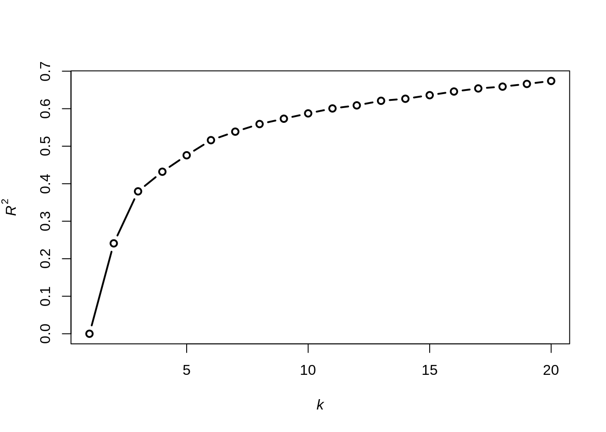

K-means es uno de los algoritmos no jerarquicos mas usados. Puede ser usado cuando todas las variables son cuantitativas. Elige la mejor partición de \(n\) unidades en \(k\) clusters. Para definir el concepto de la mejor partición descomponemos la suma de cuadrados (\(T\)) en la suma de dos terminos. La suma de cuadrados dentro del cluster (\(W\)) y la suma de cuadrados entre los clusters (\(B\)).
\[T = W+B\]
\(W\) permite evaluar la calidad de la partición, se sigue que la mejor partición se obtiene de
\[\min W\] o de forma equivalente
\[\max B\]
Se puede expresar de manera equivalente como un problema de optimización con restricciones.
\[\min_{\mathbf{U,H}} \sum_{i=1}^n\sum_{g=1}^k\sum_{j=1}^p u_{ig}(x_{ij}-h_{gj})^2= \sum_{i=1}^n\sum_{g=1}^k u_{ig}d^2(\mathbf{x}_i, \mathbf{h}_g)\]
\[sa \hspace{1cm} u_{ig} \in \{0,1 \},\hspace{1cm} i=1,2,\cdots,n \hspace{1cm} g = 1,2,\cdots, k\]
\[\sum_{g=1}^k u_{ig} = 1,\hspace{1cm} i=1,2,\cdots,n \]
Donde \(U\) de orden \((n \times k)\) es una matriz binaria donde cada fila suma 1. La fila \(n\) toma el valor 1 en la columna \(g\) si el valor \(n-esimo\) pertenece al cluster \(g\). La matriz \(H\) es la matriz de centroides \((k \times p)\) con filas \((h_{g1},\cdots, h_{gp}), g=1,2,\cdots,k\).
La solución óptima se obtiene con el siguiente algoritmo iterativo
\[u_{ig} = \left\{\begin{matrix} \displaystyle 1,& \text{ si } g=arg\min_{g'=1,\cdots,k}\, d^2(\mathbf{x}_i, \mathbf{h}_{g'}) \\ 0, &\text{ otro caso }\end{matrix}\right.\] para \(i=1,2,\cdots, n\) y \(g=1,2,\cdots,k\). 3. Dado \(U\), calculamos los centroides
\[h_g = \frac{\displaystyle \sum_{i=1}^n u_{ig}\mathbf{x}_i}{\displaystyle \sum_{i=1}^n u_{ig}}\]
Podemos relajar el criterio de convergencia fijando un número máximo de iteraciones. Notemos que la convergencia no asegura que encontramos la partición que minimiza \(W\), por lo que es común realizar el algoritmo mas de una vez con distintas matrices iniciales.
La libreria mas famosa en \(R\) que contiene kmeanses stats
Utilizaremos el dataset NBA.48 que contiene estadísticas de la temporada regular del 2018-19. Suponemos que el manager está interesado en adquirir nuevos jugadores para la temporada siguiente y quiere tomar la decisión basandose en las estadisticas de los jugadores registrados durante esa temporada. Es decir, mediante clusters queremos encontrar los mejores jugadores en base a cierto criterio.
Los datos contienen estadisticas normalizadas por 48 minutos. Para el clustering consideraremos variables realizacionadas a la performance de los jugadores. Las variables puntos (PTS), intentos de tiros de campo (FGA), porcentaje de tiros de campo (FG.), intentos de tiros de campo de tres puntos (X3PA), porcentaje de tiros de campo de 3 puntos (X3P.), intento de tiros libre (FTA), porcentaje de tiros libre (FT.), rebote ofensivo (OREB), rebote defensivo (DREB), asistencia (AST), perdidas de balón (TOV), robos (STL) y bloqueos (BLK). Se eliminaron del analisis jugadores con menos de 12 minutos de participación para evitar valores atípicos.
library(datasetsICR)
data("NBA.48")
names(NBA.48)## [1] "PLAYER" "TEAM" "AGE" "GP" "W" "L" "MIN" "PTS"
## [9] "FGM" "FGA" "FG." "X3PM" "X3PA" "X3P." "FTM" "FTA"
## [17] "FT." "OREB" "DREB" "REB" "AST" "TOV" "STL" "BLK"
## [25] "PF" "FP" "DD2" "TD3" "X..."NBA <- NBA.48[,c(1,8,10,11,13,14,16,17,18,19,21,22,23,24) ]
data("NBA.game")
NBA <- NBA[NBA.game$MIN >= 12,]
row.names(NBA)<- NBA[,1]
NBA <- NBA[,-1]
str(NBA)## 'data.frame': 403 obs. of 13 variables:
## $ PTS : num 22.7 21.9 22.5 15.9 19.6 13.5 20.7 26.5 16.8 16.1 ...
## $ FGA : num 19.1 19.5 17.6 12.4 16.5 12.8 15.6 20.1 12.8 13.2 ...
## $ FG. : num 44.9 40.1 53.5 43.3 40.5 35.7 44.5 49.4 49.4 48.7 ...
## $ X3PA: num 6.3 9.4 4.9 5.9 5.9 10.4 4.5 6.3 3.6 5.6 ...
## $ X3P.: num 34.9 33.9 36 34.3 36.3 32.3 48 36.3 39.1 35.6 ...
## $ FTA : num 4.6 3.7 2.3 3.6 4.9 1.1 5.8 6.7 4.6 2.3 ...
## $ FT. : num 73.1 82 82.1 86.7 82.3 92.3 79.7 64.8 62.1 56.3 ...
## $ OREB: num 2.4 0.4 2.9 2.3 1 0.4 1.8 4.9 4.6 3.9 ...
## $ DREB: num 8.1 4.6 8.2 10.4 7.2 3.5 4.2 8.3 7.4 7.9 ...
## $ AST : num 5.3 6.5 6.9 2.2 4.5 1.6 7 2.7 2.7 1.5 ...
## $ TOV : num 3 3 2.5 1.5 2.3 1.1 3.8 3 2 1.4 ...
## $ STL : num 1 1.6 1.4 1.4 1.4 1.4 2.2 0.8 0.6 0.9 ...
## $ BLK : num 1 1 2.1 0.7 0.7 0.5 0.8 2.1 1.6 0.7 ...Ya que los valores tienen diferentes unidades de medida, estandarizaremos.
NBA.Z <- scale(NBA, center=TRUE, scale=TRUE)No sabemos el numero de clusters, por lo que pondremos un mínimo de 2 y un máximo de 20. Haremos un plot de los valores \(W\) para cada número de clusters. en la función kmeans el parametro tot.withinss permite obtener el valor de \(W\)
n <- dim(NBA.Z)[1]
k.min <- 2
k.max <- 20
wss <- numeric()
wss[1] <- (n-1)*sum(apply(NBA.Z, 2, var))
for(k in k.min : k.max){
wss[k] <- kmeans(NBA.Z, centers=k) $tot.withinss
}
plot(1:k.max , wss, xlab = expression(italic(k)), ylab = expression(italic(W)), type = "b",
lwd = 2)También podemos calcular las diferencias entre el cluster \(k\) y \(k+1\) con la función diff
diff(wss)## [1] -1259.565083 -724.366896 -273.292642 -60.853821 -307.891875
## [6] -176.601606 -99.588823 -25.929129 -138.709183 -39.509719
## [11] -82.489951 -36.495069 6.475489 -97.137585 -27.434810
## [16] -35.823636 -19.540513 -31.457261 -70.319614Podemos iterar de nuevo para comprobar
wss <- numeric()
wss[1] <- (n-1)*sum(apply(NBA.Z,2,var))
for(k in k.min:k.max){
wss[k]<- kmeans(NBA.Z,k,nstart=50,iter.max = 1000)$tot.withinss}
plot(1:k.max , wss,xlab = expression(italic(k)), ylab = expression(italic(W)),
type = "b",lwd = 2)diff(wss)## [1] -1259.56508 -724.36690 -273.32528 -229.41215 -210.38554 -118.53340
## [7] -106.08272 -75.39740 -72.32090 -68.31813 -62.60855 -43.79449
## [13] -49.51078 -40.85507 -41.45417 -22.31656 -46.10873 -32.97665
## [19] -33.89448Una forma de elegir el número de clusters es mediante la método del codo. Este método busca el valor \(k\) que satisfaga que un incremento de \(k\), no disminuya sustancialmente el valor de \(W\), es decir, se forma una curva. En este caso podriamos elegir \(k=3\).
Otro gráfico es el de \(R^2\)
\[R^2 = 1- \frac{W}{T} = 1- \frac{B}{T}\]
R2 <- 1 - wss/wss[1]
plot(1:k.max, R2,xlab = expression(italic(k)),ylab = expression(italic(R^2)),
type = "b",lwd=2)
Luego por la regla del codo elegimos \(k=3\).
Otra opción es el indice de Calinski y Harabasz o medida pseudo F, definida por
\[\displaystyle \frac{\displaystyle\frac{B}{k-1}}{\displaystyle \frac{W}{n-k}}\]
El peak indica el número de clusters, de hecho largos valores de pseudo F identifica particiones bien separadas (\(B\) grande) y clusters homogeneos (\(W\) pequeño)
bss <- wss[1] - wss
pseudoF <- numeric()
pseudoF[1] <- 0
for(k in k.min:k.max){
pseudoF[k] <- (bss[k]/(k-1))/(wss[k]/(n-k))
}
plot(1:k.max , pseudoF ,xlab = expression(italic(k)),ylab = "pseudo F", type = "b" , lwd = 2)Podemos ver peaks en 2 y en 3, por lo que podriamos considerar el rango 2-4
set.seed(2345)
res.kmeans.2 <- kmeans(NBA.Z, centers = 2, nstart = 50 , iter.max = 1000)
names(res.kmeans.2)## [1] "cluster" "centers" "totss" "withinss" "tot.withinss"
## [6] "betweenss" "size" "iter" "ifault"totss guarda el total de la suma de cuadrados \(T\),
T ), betweenss guarda el valor de \(B\), tot.withinss guarda el valor de \(W\) y withinss guarda el valor W_g (por cluster). Tambien size guarda la cantidad de unidades por cluster. cluster retorna cada unidad con el numero de cluster correspondiente. centers retorna una matriz con los centroides de cada fila. iterretorna el número de iteraciones necesarios para convergencia y ifault indica el número de problemas computacionales.
res.kmeans.2$size## [1] 313 90res.kmeans.2$withinss## [1] 2866.172 1100.263round(res.kmeans.2$centers, 2)## PTS FGA FG. X3PA X3P. FTA FT. OREB DREB AST TOV STL BLK
## 1 -0.05 0.06 -0.37 0.36 0.32 -0.19 0.17 -0.44 -0.34 0.12 -0.05 0.05 -0.36
## 2 0.18 -0.22 1.30 -1.26 -1.11 0.66 -0.58 1.53 1.18 -0.41 0.19 -0.18 1.24La solución con \(k=2\) clusters, es bastante simplista. El cluster 2 se caracteriza por altos numeros de puntos, rebotes, perdidas de balón y bloqueos. Mientras el Cluster 1 detecta jugadores con un gran numero de asistencias y especialmente intentos de tiros de tres puntos y porcentajes.
Ahora vemos para \(k=3\)
set.seed(2345)
res.kmeans.3 <- kmeans(NBA.Z, centers = 3, nstart=50, iter.max=1000)
res.kmeans.3$size ## [1] 80 226 97res.kmeans.3$withinss## [1] 856.3223 1509.7538 875.9919round(res.kmeans.3$centers , 2)## PTS FGA FG. X3PA X3P. FTA FT. OREB DREB AST TOV STL BLK
## 1 -0.03 -0.42 1.36 -1.37 -1.27 0.49 -0.68 1.60 1.10 -0.51 0.04 -0.23 1.23
## 2 -0.51 -0.38 -0.46 0.30 0.30 -0.59 0.06 -0.42 -0.39 -0.18 -0.46 -0.01 -0.33
## 3 1.21 1.24 -0.06 0.44 0.35 0.98 0.43 -0.33 0.00 0.83 1.04 0.21 -0.24Debido a que es dificil interpretar los valores estandarizados, volveremos a los valores originales
k <- 3
res.kmeans.3$centers <- t(sapply(X=1:k,FUN=function(nc) apply(NBA[res.kmeans.3$cluster==nc,],
2, mean)))
rownames( res.kmeans.3$centers) <- 1: k
round(res.kmeans.3$centers, 2)## PTS FGA FG. X3PA X3P. FTA FT. OREB DREB AST TOV STL BLK
## 1 20.55 14.97 55.13 1.43 16.85 5.41 68.10 4.86 9.99 3.24 2.57 1.35 2.01
## 2 17.50 15.15 42.37 7.15 34.30 2.85 75.79 1.39 5.72 4.14 2.06 1.49 0.71
## 3 28.35 22.57 45.16 7.66 34.91 6.56 79.75 1.54 6.83 6.87 3.59 1.61 0.78Podemos obtener el mismo resultado con
round(aggregate(.~res.kmeans.3$cluster, data = NBA , FUN = mean )[ , -1] , 2)## PTS FGA FG. X3PA X3P. FTA FT. OREB DREB AST TOV STL BLK
## 1 20.55 14.97 55.13 1.43 16.85 5.41 68.10 4.86 9.99 3.24 2.57 1.35 2.01
## 2 17.50 15.15 42.37 7.15 34.30 2.85 75.79 1.39 5.72 4.14 2.06 1.49 0.71
## 3 28.35 22.57 45.16 7.66 34.91 6.56 79.75 1.54 6.83 6.87 3.59 1.61 0.78Para \(k=3\),
Podemos graficar un boxplot para ver las tendencias centrales en cada cluster.
par(mar=c(1,1,1,1))
par(mfrow = c(5,3))
for(j in 1:ncol(NBA)){
boxplot(NBA[, j]~res.kmeans.3$cluster,
xlab = "Cluster" , ylab = "",
col = colors()[c(110,121,130)],
main = names(NBA)[j])
}
barplot(table(res.kmeans.3$cluster),
xlab = "Cluster" , ylab = "" ,
col = colors()[c(110 , 121 , 130)] ,
main = "Cluster size")
barplot( res.kmeans.3 $ withinss , xlab = "Cluster" , names.arg = 1:3 ,
col = colors()[c(110 , 121 , 130) ] ,
main = expression( italic(W[g])))Para plotear utilizaremos la libreria factoextra. Si \(n>2\) se utilizan las 2 primeras componentes principales.
library(factoextra)fviz_cluster(res.kmeans.3, data = NBA,
palette = c("#2E9FDF", "#00AFBB", "#E7B800"),
geom = "point",
ellipse.type = "convex",
ggtheme = theme_bw()
)fviz_cluster(res.kmeans.2, data = NBA,
palette = c("#2E9FDF", "#00AFBB", "#E7B800"),
geom = "point",
ellipse.type = "convex",
ggtheme = theme_bw()
)